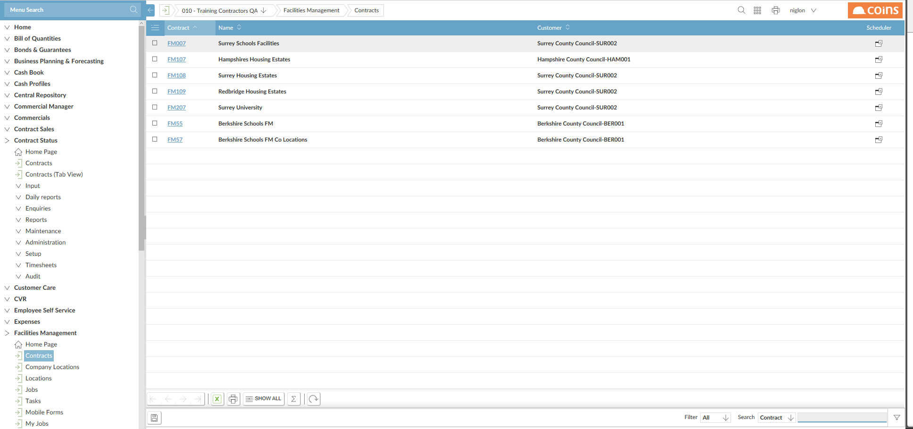
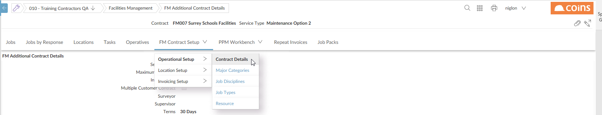
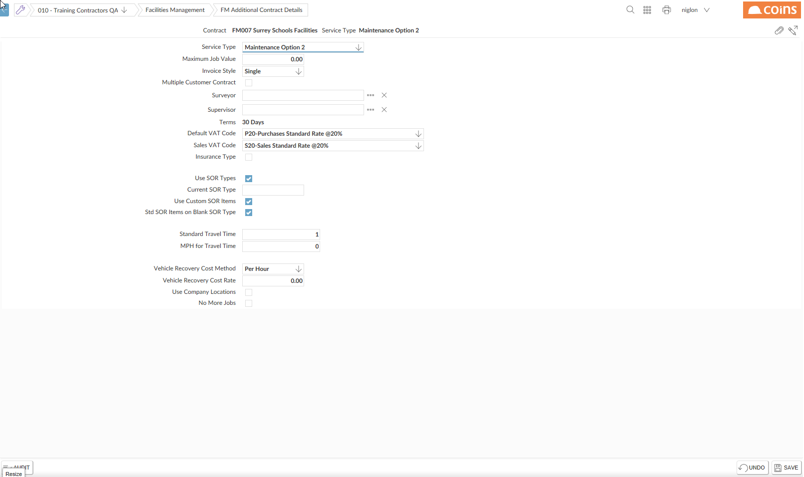

The section length determines how many can be assigned to a . For example, with a section length of 4, up to 9,999 can be assigned. If you want to create more than will be allowed within the available section length, you can choose to have alpha-numeric codes.
-
- Navigate to The Menu
- Select the Option

- Click the hyperlink for the required
- Select FM Setup tab.
- Select the Operational Setup tab group and select the Contract Details option.

- On the Details tab, fill in the additional details.

- Set up at least one major category.
- Set up at least one location type.
- Set up at least one geographical area. Often will have only one geographical area. For a that covers a large area, or areas that are geographically distinct (for example, Southampton and Isle of Wight), you may set up more than one area.